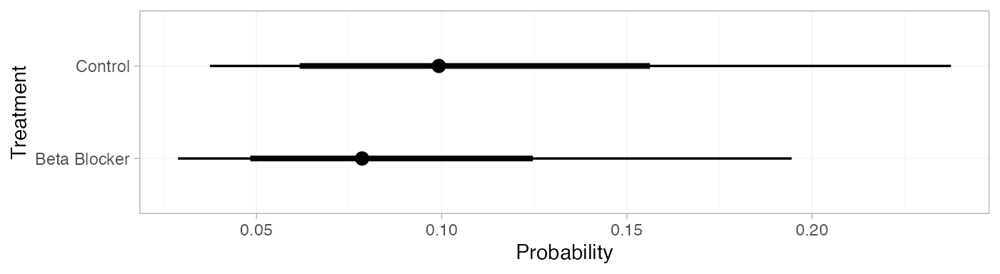
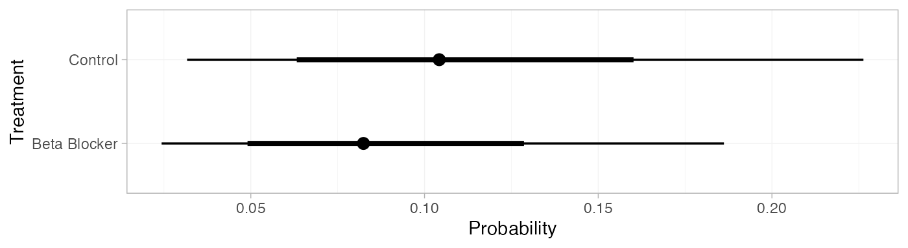
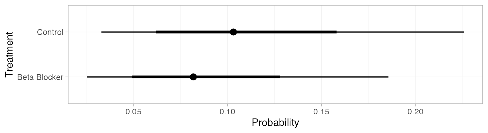

library(multinma)
options(mc.cores = parallel::detectCores())#> For execution on a local, multicore CPU with excess RAM we recommend calling
#> options(mc.cores = parallel::detectCores())
#>
#> Attaching package: 'multinma'
#> The following objects are masked from 'package:stats':
#>
#> dgamma, pgamma, qgammaThis vignette describes the analysis of 22 trials comparing beta
blockers to control for preventing mortality after myocardial infarction
(Carlin 1992; Dias et al. 2011). The data are available in
this package as blocker:
head(blocker)
#> studyn trtn trtc r n
#> 1 1 1 Control 3 39
#> 2 1 2 Beta Blocker 3 38
#> 3 2 1 Control 14 116
#> 4 2 2 Beta Blocker 7 114
#> 5 3 1 Control 11 93
#> 6 3 2 Beta Blocker 5 69Setting up the network
We begin by setting up the network - here just a pairwise
meta-analysis. We have arm-level count data giving the number of deaths
(r) out of the total (n) in each arm, so we
use the function set_agd_arm(). We set “Control” as the
reference treatment.
blocker_net <- set_agd_arm(blocker,
study = studyn,
trt = trtc,
r = r,
n = n,
trt_ref = "Control")
blocker_net
#> A network with 22 AgD studies (arm-based).
#>
#> ------------------------------------------------------- AgD studies (arm-based) ----
#> Study Treatment arms
#> 1 2: Control | Beta Blocker
#> 2 2: Control | Beta Blocker
#> 3 2: Control | Beta Blocker
#> 4 2: Control | Beta Blocker
#> 5 2: Control | Beta Blocker
#> 6 2: Control | Beta Blocker
#> 7 2: Control | Beta Blocker
#> 8 2: Control | Beta Blocker
#> 9 2: Control | Beta Blocker
#> 10 2: Control | Beta Blocker
#> ... plus 12 more studies
#>
#> Outcome type: count
#> ------------------------------------------------------------------------------------
#> Total number of treatments: 2
#> Total number of studies: 22
#> Reference treatment is: Control
#> Network is connectedMeta-analysis models
We fit both fixed effect (FE) and random effects (RE) models.
Fixed effect meta-analysis
First, we fit a fixed effect model using the nma()
function with trt_effects = "fixed". We use \(\mathrm{N}(0, 100^2)\) prior distributions
for the treatment effects \(d_k\) and
study-specific intercepts \(\mu_j\). We
can examine the range of parameter values implied by these prior
distributions with the summary() method:
summary(normal(scale = 100))
#> A Normal prior distribution: location = 0, scale = 100.
#> 50% of the prior density lies between -67.45 and 67.45.
#> 95% of the prior density lies between -196 and 196.The model is fitted using the nma() function. By
default, this will use a Binomial likelihood and a logit link function,
auto-detected from the data.
blocker_fit_FE <- nma(blocker_net,
trt_effects = "fixed",
prior_intercept = normal(scale = 100),
prior_trt = normal(scale = 100))Basic parameter summaries are given by the print()
method:
blocker_fit_FE
#> A fixed effects NMA with a binomial likelihood (logit link).
#> Inference for Stan model: binomial_1par.
#> 4 chains, each with iter=2000; warmup=1000; thin=1;
#> post-warmup draws per chain=1000, total post-warmup draws=4000.
#>
#> mean se_mean sd 2.5% 25% 50% 75% 97.5% n_eff Rhat
#> d[Beta Blocker] -0.26 0.00 0.05 -0.36 -0.30 -0.26 -0.23 -0.17 3311 1
#> lp__ -5960.42 0.08 3.37 -5967.95 -5962.45 -5960.07 -5957.98 -5954.74 1583 1
#>
#> Samples were drawn using NUTS(diag_e) at Wed Mar 6 13:19:45 2024.
#> For each parameter, n_eff is a crude measure of effective sample size,
#> and Rhat is the potential scale reduction factor on split chains (at
#> convergence, Rhat=1).By default, summaries of the study-specific intercepts \(\mu_j\) are hidden, but could be examined
by changing the pars argument:
The prior and posterior distributions can be compared visually using
the plot_prior_posterior() function:
plot_prior_posterior(blocker_fit_FE, prior = "trt")
Random effects meta-analysis
We now fit a random effects model using the nma()
function with trt_effects = "random". Again, we use \(\mathrm{N}(0, 100^2)\) prior distributions
for the treatment effects \(d_k\) and
study-specific intercepts \(\mu_j\),
and we additionally use a \(\textrm{half-N}(5^2)\) prior for the
heterogeneity standard deviation \(\tau\). We can examine the range of
parameter values implied by these prior distributions with the
summary() method:
summary(normal(scale = 100))
#> A Normal prior distribution: location = 0, scale = 100.
#> 50% of the prior density lies between -67.45 and 67.45.
#> 95% of the prior density lies between -196 and 196.
summary(half_normal(scale = 5))
#> A half-Normal prior distribution: location = 0, scale = 5.
#> 50% of the prior density lies between 0 and 3.37.
#> 95% of the prior density lies between 0 and 9.8.Fitting the RE model
blocker_fit_RE <- nma(blocker_net,
trt_effects = "random",
prior_intercept = normal(scale = 100),
prior_trt = normal(scale = 100),
prior_het = half_normal(scale = 5))Basic parameter summaries are given by the print()
method:
blocker_fit_RE
#> A random effects NMA with a binomial likelihood (logit link).
#> Inference for Stan model: binomial_1par.
#> 4 chains, each with iter=2000; warmup=1000; thin=1;
#> post-warmup draws per chain=1000, total post-warmup draws=4000.
#>
#> mean se_mean sd 2.5% 25% 50% 75% 97.5% n_eff Rhat
#> d[Beta Blocker] -0.25 0.00 0.06 -0.37 -0.29 -0.25 -0.21 -0.12 3726 1.00
#> lp__ -5970.70 0.18 5.58 -5982.56 -5974.28 -5970.38 -5966.83 -5960.51 1015 1.01
#> tau 0.13 0.00 0.08 0.01 0.07 0.13 0.18 0.31 751 1.00
#>
#> Samples were drawn using NUTS(diag_e) at Wed Mar 6 13:19:52 2024.
#> For each parameter, n_eff is a crude measure of effective sample size,
#> and Rhat is the potential scale reduction factor on split chains (at
#> convergence, Rhat=1).By default, summaries of the study-specific intercepts \(\mu_j\) and study-specific relative effects
\(\delta_{jk}\) are hidden, but could
be examined by changing the pars argument:
The prior and posterior distributions can be compared visually using
the plot_prior_posterior() function:
plot_prior_posterior(blocker_fit_RE, prior = c("trt", "het"))
Model comparison
Model fit can be checked using the dic() function:
(dic_FE <- dic(blocker_fit_FE))
#> Residual deviance: 46.8 (on 44 data points)
#> pD: 23.2
#> DIC: 70.1
(dic_RE <- dic(blocker_fit_RE))
#> Residual deviance: 41.8 (on 44 data points)
#> pD: 28
#> DIC: 69.8The residual deviance is lower under the RE model, which is to be expected as this model is more flexible. However, this comes with an increased effective number of parameters (note the increase in \(p_D\)). As a result, the DIC of both models is very similar and the FE model may be preferred for parsimony.
We can also examine the residual deviance contributions with the
corresponding plot() method.
plot(dic_FE)
plot(dic_RE)There are a number of points which are not very well fit by the FE model, having posterior mean residual deviance contributions greater than 1. Study 14 is a particularly poor fit under the FE model, but its residual deviance is reduced (although still high) under the RE model. The evidence should be given further careful examination, and consideration given to other issues such as the potential for effect-modifying covariates (Dias et al. 2011).
Further results
Dias et al. (2011) produce absolute predictions of the
probability of mortality on beta blockers and control, assuming a Normal
distribution on the baseline logit-probability of mortality with mean
\(-2.2\) and precision \(3.3\). We can replicate these results using
the predict() method. The baseline argument
takes a distr() distribution object, with which we specify
the corresponding Normal distribution. We set
type = "response" to produce predicted probabilities
(type = "link" would produce predicted log odds).
pred_FE <- predict(blocker_fit_FE,
baseline = distr(qnorm, mean = -2.2, sd = 3.3^-0.5),
type = "response")
pred_FE
#> mean sd 2.5% 25% 50% 75% 97.5% Bulk_ESS Tail_ESS Rhat
#> pred[Control] 0.11 0.05 0.04 0.07 0.10 0.14 0.24 3829 3848 1
#> pred[Beta Blocker] 0.09 0.04 0.03 0.06 0.08 0.11 0.20 3828 3793 1
plot(pred_FE)
pred_RE <- predict(blocker_fit_RE,
baseline = distr(qnorm, mean = -2.2, sd = 3.3^-0.5),
type = "response")
pred_RE
#> mean sd 2.5% 25% 50% 75% 97.5% Bulk_ESS Tail_ESS Rhat
#> pred[Control] 0.11 0.05 0.04 0.07 0.10 0.14 0.25 3803 3833 1
#> pred[Beta Blocker] 0.09 0.05 0.03 0.06 0.08 0.11 0.20 3828 3762 1
plot(pred_RE)
If instead of information on the baseline logit-probability of
mortality we have event counts, we can use these to construct a Beta
distribution for the baseline probability of mortality. For example, if
4 out of 36 individuals died on control treatment in the target
population of interest, the appropriate Beta distribution for the
probability would be \(\textrm{Beta}(4,
36-4)\). We can specify this Beta distribution for the baseline
response using the baseline_type = "reponse" argument (the
default is "link", used above for the baseline
logit-probability).
pred_FE_beta <- predict(blocker_fit_FE,
baseline = distr(qbeta, 4, 36-4),
baseline_type = "response",
type = "response")
pred_FE_beta
#> mean sd 2.5% 25% 50% 75% 97.5% Bulk_ESS Tail_ESS Rhat
#> pred[Control] 0.11 0.05 0.03 0.07 0.10 0.14 0.23 4022 3932 1
#> pred[Beta Blocker] 0.09 0.04 0.03 0.06 0.08 0.11 0.19 4014 3933 1
plot(pred_FE_beta)
pred_RE_beta <- predict(blocker_fit_RE,
baseline = distr(qbeta, 4, 36-4),
baseline_type = "response",
type = "response")
pred_RE_beta
#> mean sd 2.5% 25% 50% 75% 97.5% Bulk_ESS Tail_ESS Rhat
#> pred[Control] 0.11 0.05 0.03 0.07 0.10 0.14 0.23 4311 3973 1
#> pred[Beta Blocker] 0.09 0.04 0.03 0.06 0.08 0.11 0.19 4280 3932 1
plot(pred_RE_beta)
Notice that these results are nearly equivalent to those calculated above using the Normal distribution for the baseline logit-probability, since these event counts correspond to approximately the same distribution on the logit-probability.